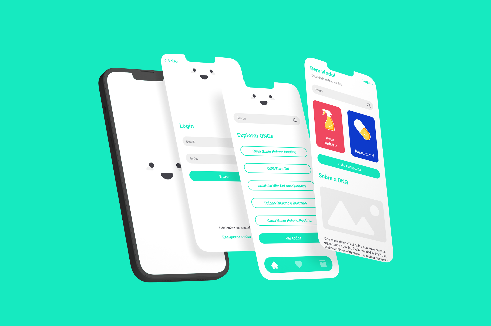
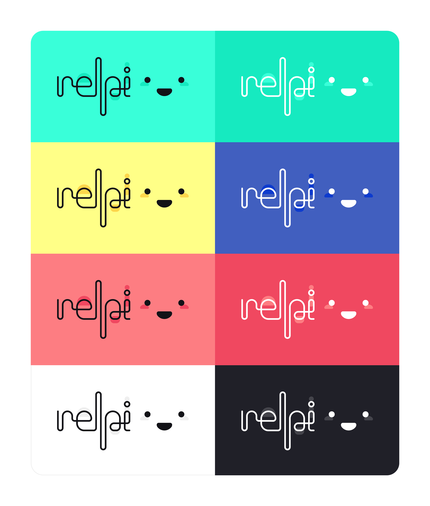
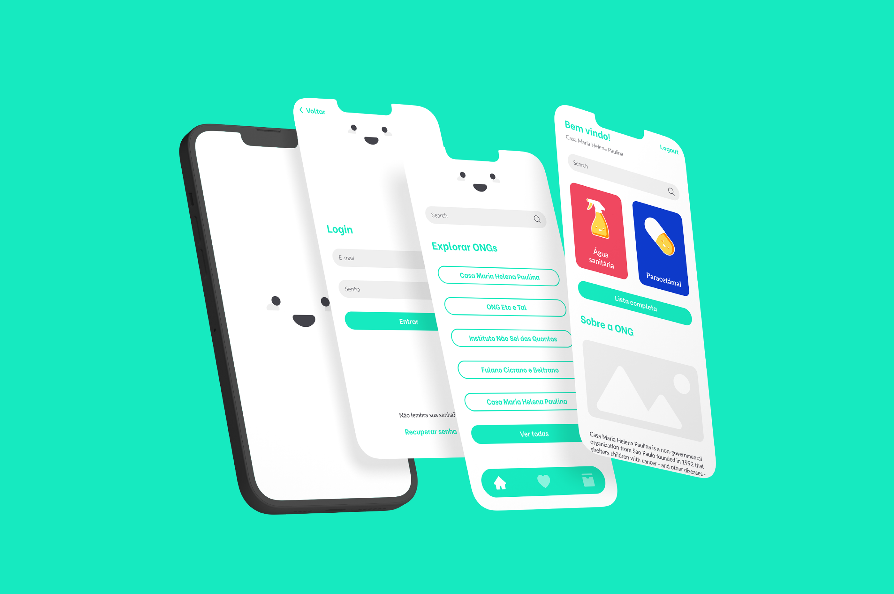
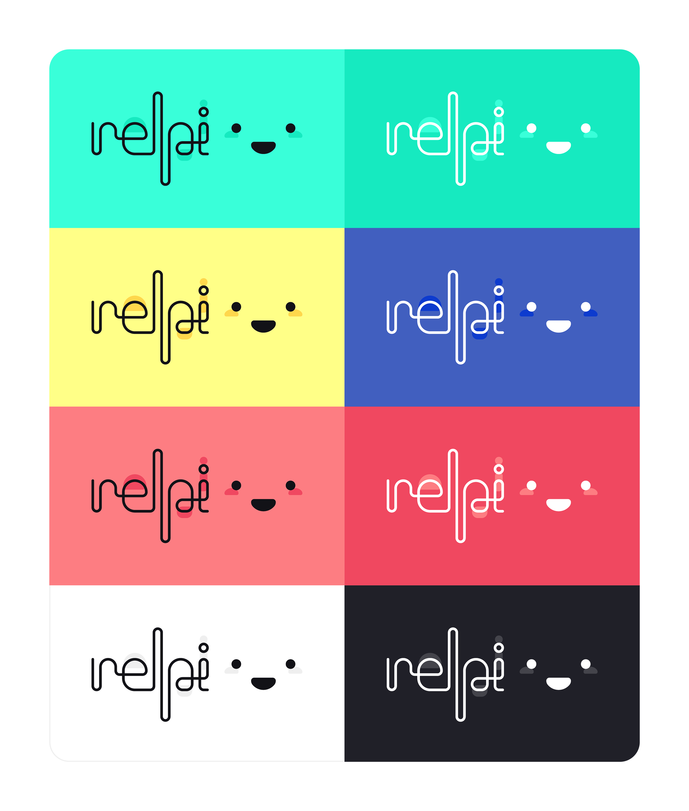

relpi is a platform that connects non-governmental organizations with potential donors.
The app aims to help NGOs to manage their donations while also connecting the donors to the organizations by giving them access to an updated list of supplies it needs. relpi para ONGs (relpi for NGOs) is the app for NGOs registration, in which it is possible to manage items and add information about the organization and relpi is the app for donors, in which the user can favorite organizations and save items to create a shopping list.
"relpi" is a Portuguese-ized version for the word "help"; the apps's identity and interface as a whole has the proposal to be simple, friendly and easy understanding.
The user research and usability tests were made with the help of Casa Maria Helena Paulina, a NGO from Sao Paulo (Brazil) that shelters children in cancer treatment from all over the country. This was the final project for Apple Developer Academy | Senac that was selected to be presented in the program's annual graduation event.
relpi
üáßüá∑ relpi √© uma plataforma que conecta ONGs com seus potenciais doadores.
O aplicativo visa ajudar ONGs a gerenciarem suas doações, enquanto também conecta os doadores com as organizações, dando acesso à uma lista atualizada de suplementos que elas precisam. relpi para ONGs é o aplicativo para cadastro das ONGs, onde é possível gerenciar itens e adicionar informações da organização e relpi é o aplicativo para doadores, onde o usuário pode favoritar organizações e salvar itens para criar uma lista de compra.
"relpi" é uma versão aportuguesada da palavra "help"; toda a identidade e interface do aplicativo tem a proposta de ser simples, amigável e de fácil compreensão.
A pesquisa de usuário e os testes de usabilidade foram realizados com a ajuda da Casa Maria Helena Paulina, uma ONG de São Paulo que abriga crianças em tratamento de câncer de todo o país. Esse foi o projeto final da Apple Developer Academy | Senac que foi selecionado para ser apresentado no evento anual de graduação do programa.
NOVEMBER, 2021.
 


